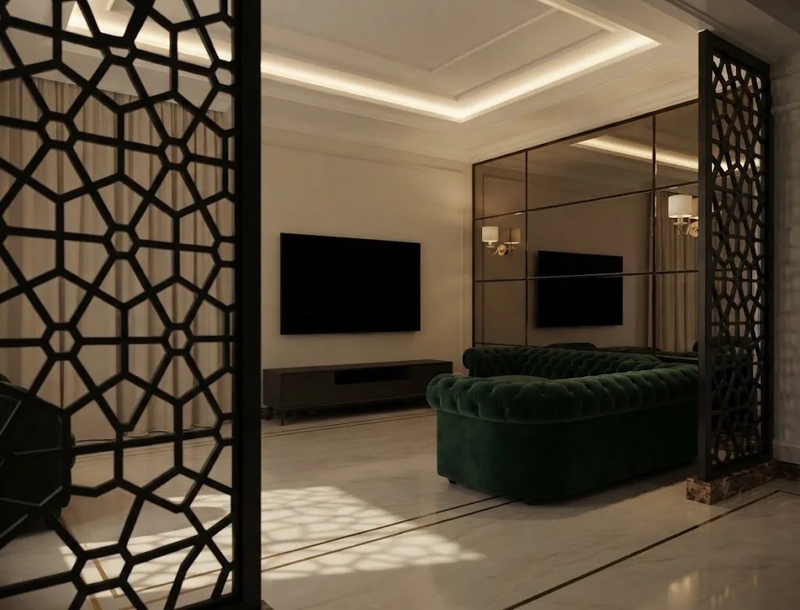
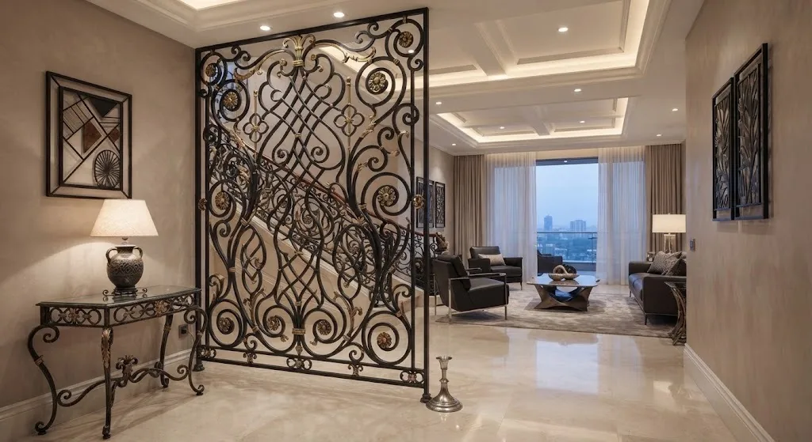
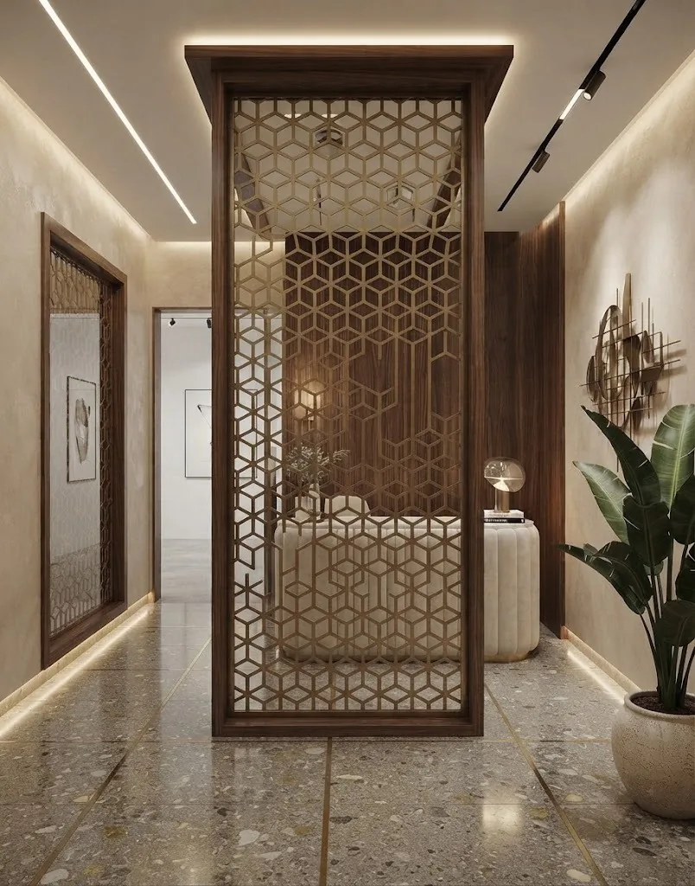
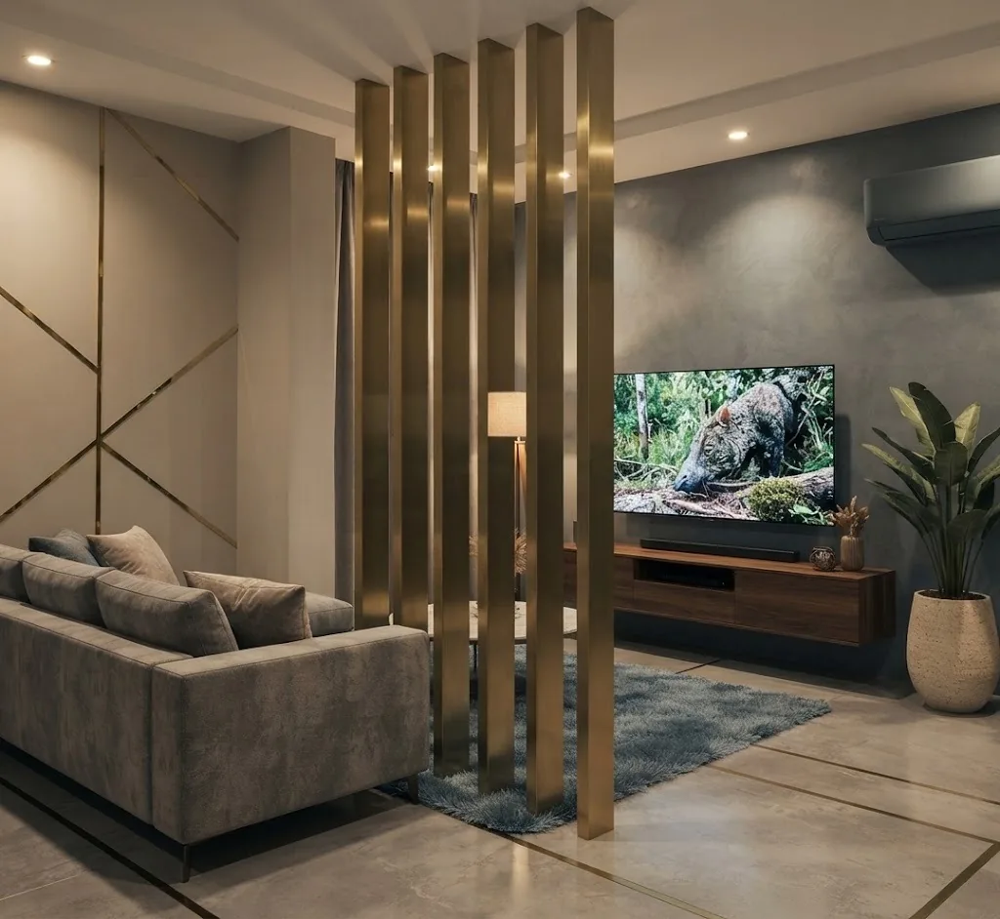
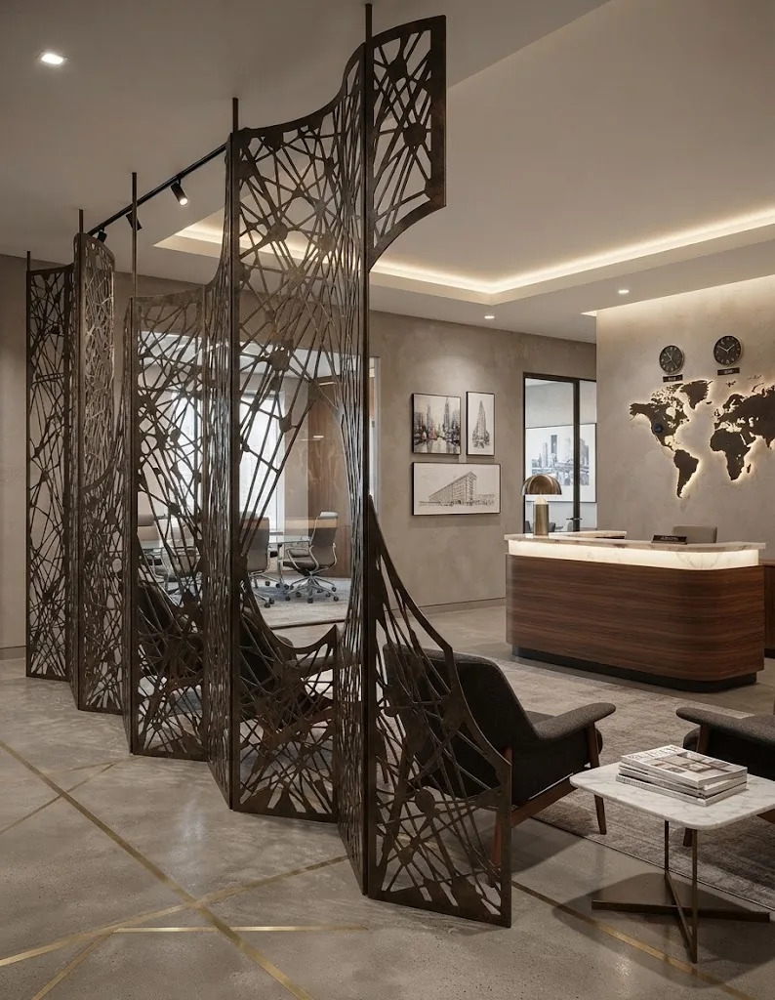
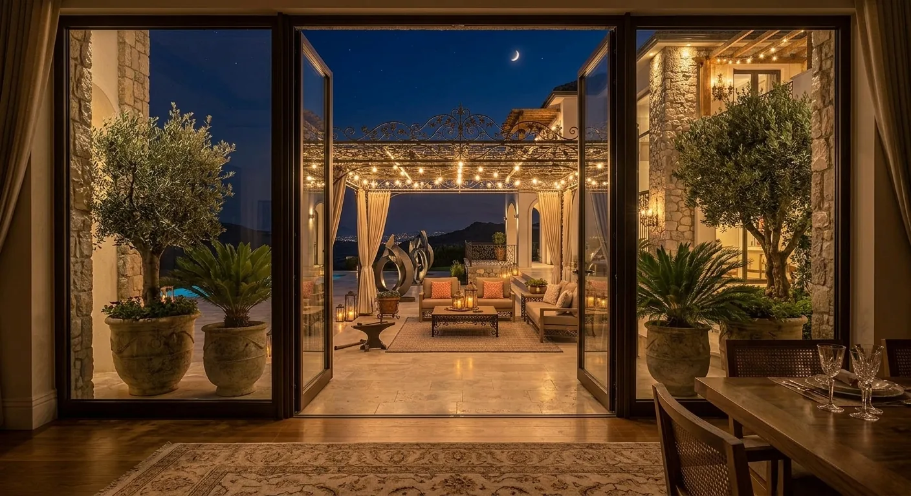

صور ووصف أولي
نراجع نوع القطعة والاستخدام والموقع والمقاسات المتاحة.
فهم الطلب أولًا
الديكور الحديدي يربط بين الوظيفة والطابع البصري للمكان. يمكن مناقشة فواصل أو شاشات زخرفية أو تفاصيل معدنية، لكن النسب وطريقة التثبيت تتحدد من أبعاد المساحة والعناصر المحيطة.
من الفكرة إلى التثبيت
نراجع نوع القطعة والاستخدام والموقع والمقاسات المتاحة.
تُحدد الحاجة إلى زيارة الموقع ونقاط القياس والتثبيت.
يبدأ التصنيع بعد الاتفاق على التفاصيل ثم يُنسق التركيب.
معرض بصري
صور مصنفة حسب نوع العمل، من دون نسبتها إلى عميل أو موقع محدد لعدم توفر بيانات موثقة للمشروعات.





معلومات عملية
تعتمد التفاصيل النهائية على المقاس والموقع والاستخدام، لذلك تفيد الصور والقياسات الأولية عند التواصل.
أرسل صور المكان والمقاسات المتوفرة وموقع العمل في مكة أو جدة، وسنراجع المعلومات قبل توضيح الخطوة التالية.
